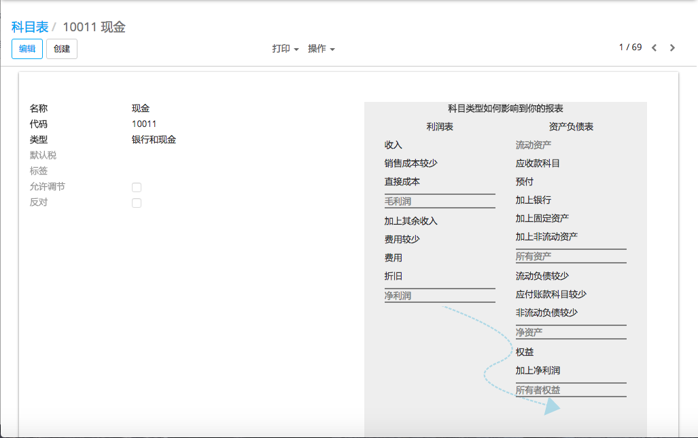

科目类型是什么？
An account type is a name or code given to an account that indicates the account's purpose.
In YuanCloud, Account Types are used for information purpose, to generate country-specific legal reports, set the rules to close a fiscal year and generate opening entries.
Basically Account types categorize general account with some specific category according to its behaviour or purpose.
yuancloud中有哪些科目类型？
YuanCloud covers all accounting types. Therefore, you cannot create new account types. Just pick the one related to your account.
科目类型列表 |
|---|
应收账款 |
应付账款 |
银行和现金 |
流动资产 |
非流动资产 |
预付账款 |
固定资产 |
流动负债 |
非流动负债 |
权益 |
当年盈余 |
其它收入 |
收入 |
折旧 |
费用报销 |
直接成本 |
我如何来配置我的科目？
Account types are automatically created when installing a chart of account. By default, YuanCloud provides a lot of chart of accounts, just install the one related to your country.
It will install generic accounts. But if it does not cover all your cases, you can create your own accounts too.
注解
If you are a Saas User, your country chart of account is automatically installed.
To create a new accounts, go to the Accounting application. Open the menu , the click on the Create button.
